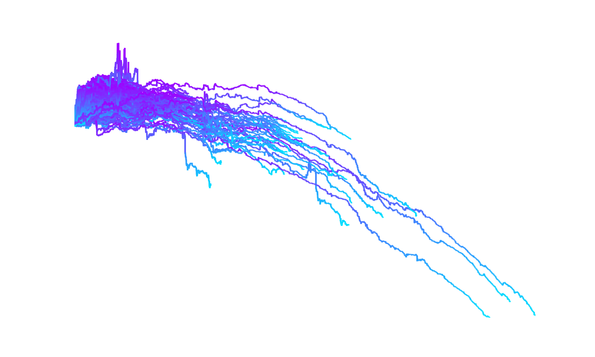
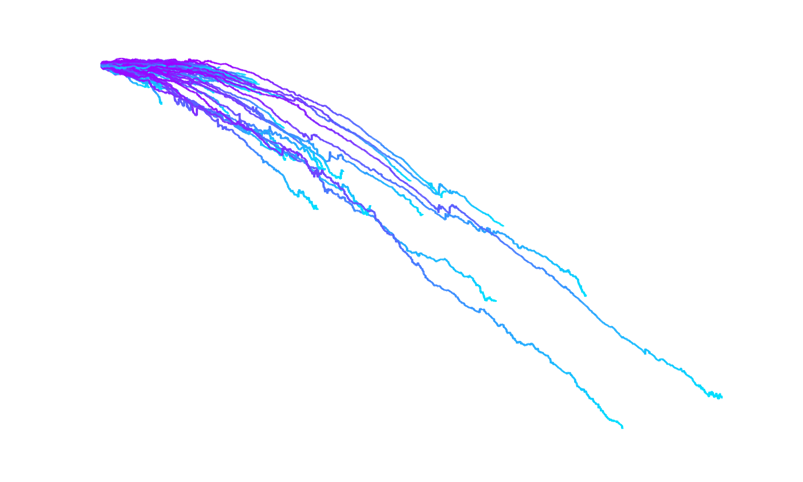
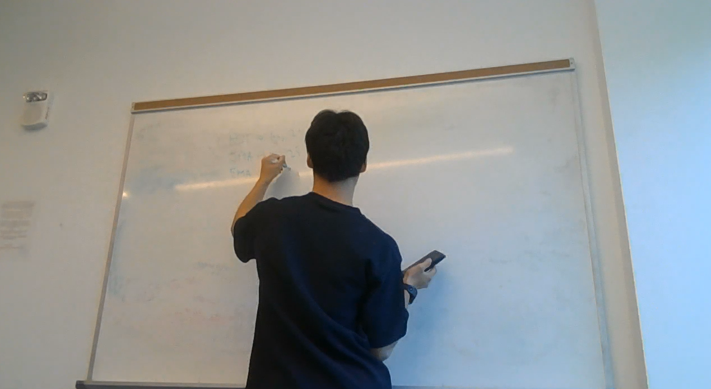
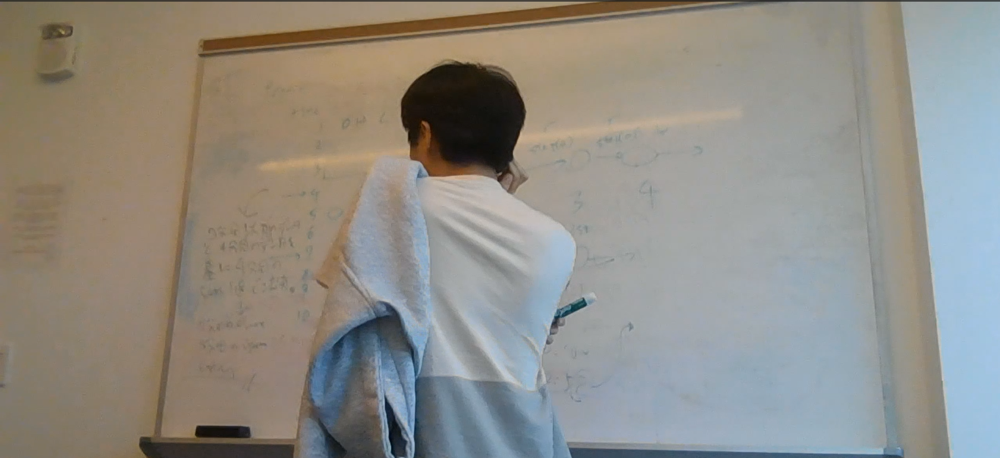
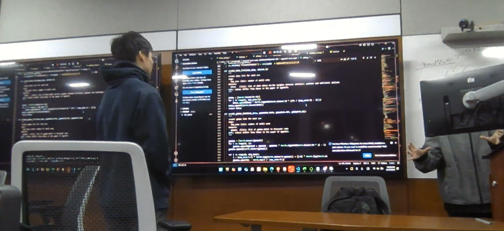
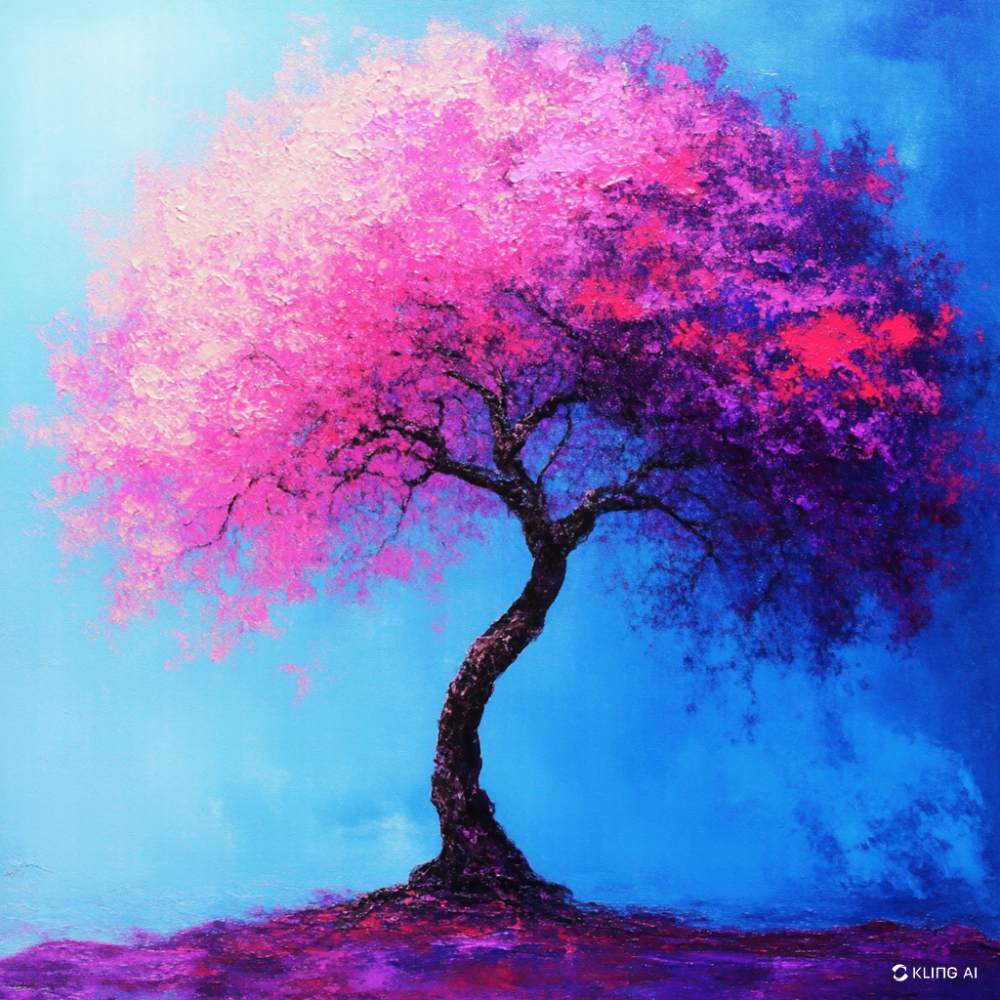

1
PC: EVOL
186
Policy
8
Agent (AI)
note: AI's trade history 2025.03.13
1
PC: RL
186
Policy
8
Agent (AI)
ALPHA
EVOL
AIに自動売買を任せる時代に。
PROJECT
「金の生る木」というタイトルの通り、私たちの取り組みは、ひとつの夢の種を蒔くところから始まりました。すべては「人間がトレードで勝てるならAIも勝てるはず」という発想に基づいており、その理念を信じて試行錯誤を重ねてまいりました。 この取り組みは、まるで一見すると美しい果実が実るかのように期待される木を育てる作業に似ています。しかし、実際の道のりは平坦ではありませんでした。約400日間、日々のマイナスのグラフを見つめながら、土を耕し、水やりを欠かさず、しかしなかなか花が咲かない状況に、私たちは数多くの壁に直面いたしました。 アイディア自体は豊富にありましたが、その実装は決して容易なものではなく、シミュレーション上で輝いていた可能性も、実運用下では数多くの予期せぬ困難にぶつかりました。現実の市場は、想像以上に厳しく、まるで大風が吹き荒れる季節のような試練を与えてきました。 しかし、これらの挑戦を一つ一つ乗り越え、ようやく私たちは真の意味での「金の生る木」を育てる日が来ると信じております。その時、すべてのトレーダーが夢見た、寝ている間にも稼げるシステムが実現し、安定した収益をもたらすことになるでしょう。 これこそが、R-x-Zenithの目標であり、私たちが目指す未来です。私たちは今後も不断の努力を続け、困難な環境の中で一歩ずつ確実に前進し、いずれは市場という大地にしっかりと根を下ろす「金の生る木」を完成させたいと考えております。
の生る木
金




R - x - Zenith
実運用の成果
運用開始から今までの実運用下での成績を表示します
研究の成果
Developer用ですが、投資者様もアクセスできるようになっています。